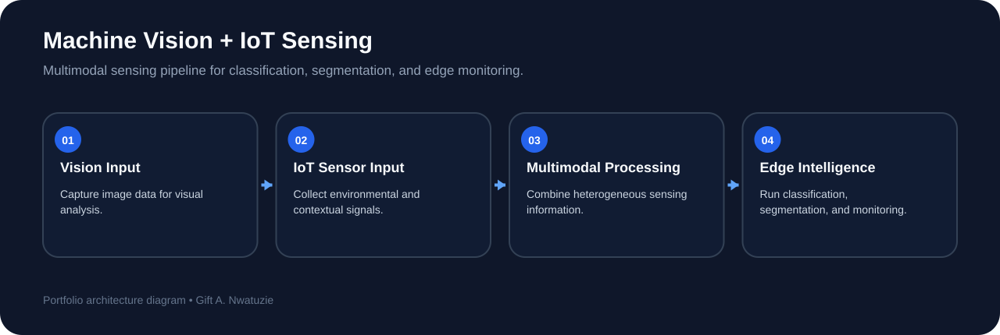

Image Classification
Developed deep learning models for disease classification and evaluated predictive performance on benchmark data.
COMPUTER VISION • IOT • MULTIMODAL AI • EDGE SYSTEMS
A multimodal framework integrating computer vision and IoT sensor data for real-time classification, segmentation, and intelligent monitoring, with deployment evaluation on edge hardware.
THE PROBLEM
Many intelligent monitoring tasks rely on images, but visual information can be incomplete when environmental or contextual signals are also important. This project explored a framework that combines machine vision with IoT sensing so that visual and non-visual information can contribute to a more complete understanding of real-world conditions.
MULTIMODAL SYSTEM ARCHITECTURE

TECHNICAL CONTRIBUTIONS
Developed deep learning models for disease classification and evaluated predictive performance on benchmark data.
Applied segmentation methods for weed detection and evaluated performance using mean intersection-over-union.
Integrated computer vision with IoT sensing to support richer monitoring than either modality alone.
Evaluated inference behavior and resource use on edge hardware to understand practical deployment trade-offs.
PERFORMANCE
ENGINEERING TAKEAWAY
This project reinforced the importance of designing machine learning systems as complete pipelines. Model accuracy matters, but so do sensing quality, multimodal integration, inference speed, resource consumption, and the realities of deployment on constrained hardware.
EXPLORE MORE